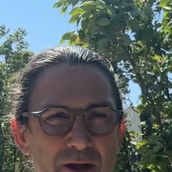

“
Notre DRH est parti du jour au lendemain. CARTESA a mis un expert en poste en 48 heures. La continuité RH n'a jamais été rompue, et ça nous a donné le temps de recruter sereinement.
Depuis 2003, des centaines de PME, ETI et groupes en Auvergne-Rhône-Alpes nous ont confié leurs enjeux RH, RSE et formation. Voici leurs retours, sans filtre.
De la problématique initiale au message qu'il adresse aux autres dirigeants : le parcours d'accompagnement d'un groupe industriel, sans filtre, par celui qui l'a vécu.

Témoignage filmé et partagé avec l'accord de Stéphane Fournier (Groupe Syrah).
Faites défiler horizontalement pour parcourir les retours d'expérience. Chaque témoignage est issu d'un accompagnement réel, partagé avec leur accord.
Une fonderie souhaitait initier sa démarche bas-carbone sans savoir par où commencer. En 3 jours de diagnostic express co-finançable, nos experts ont cartographié les postes d'émission, identifié 3 leviers de réduction rapide, et co-construit un plan d'actions sur 18 mois avec le CODIR.
Après le départ non anticipé de sa DRH, cette ETI services a fait appel à CARTESA. Un RH à temps partagé était en poste sous 48 h. Pendant 6 mois, il a piloté la réorganisation des équipes, négocié un accord d'entreprise, et recruté la future DRH permanente.
Un groupe agroalimentaire ardéchois voulait professionnaliser ses 15 chefs d'équipe répartis sur 3 sites. CARTESA a déployé un parcours AFEST sur 4 mois, avec mises en situation terrain et accompagnement individuel. Formation co-finançable (OPCO ou Région).
Trois marqueurs récurrents dans les retours d'expérience.
Premier livrable opérationnel dès le premier mois. Diagnostic express en 3 jours, RH à temps partagé en 48 h, démarrage formation sous 30 jours.
Maîtrise des dispositifs (OPCO, Région, FNE). Nous vous orientons vers le bon financement et vous accompagnons dans le montage du dossier. Le reste à charge éventuel est connu d'avance.
Nos consultants ont été DRH, dirigeants ou responsables RSE en entreprise. Pas de cabinet hors-sol : du conseil par des praticiens, pour des praticiens.
30 minutes pour comprendre vos enjeux RH, RSE ou formation. Sans engagement, sans pitch commercial, juste un échange utile.